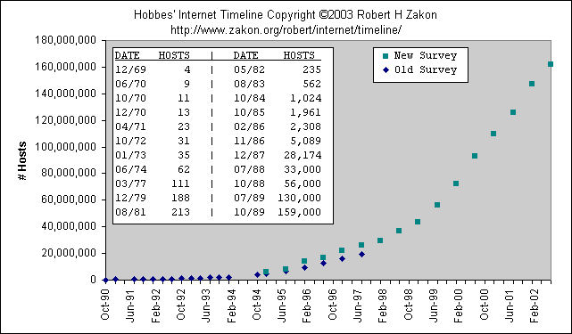
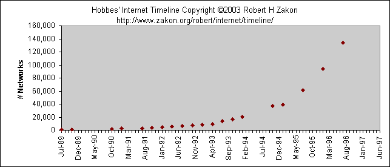
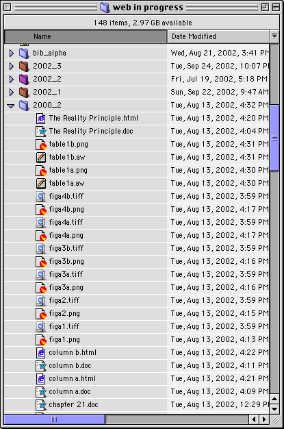
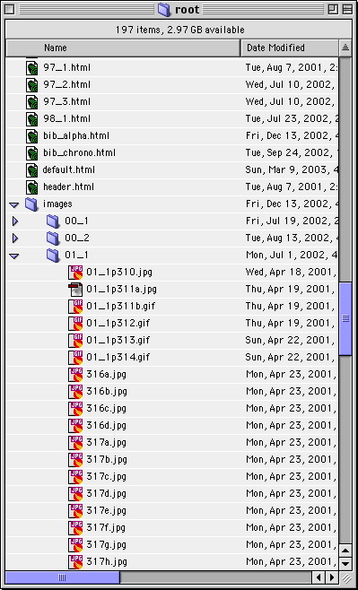

|
|||||||||||||||||||||||||||||||||||||||||||||||
|
ACKNOWLEDGMENTS I would like to express my appreciation to the following people:
|
|||||||||||||||||||||||||||||||||||||||||||||||
|
|
|||||||||||||||||||||||||||||||||||||||||||||||
|
Table of Contents |
|||||||||||||||||||||||||||||||||||||||||||||||
| ACKNOWLEDGMENTS | |||||||||||||||||||||||||||||||||||||||||||||||
| I. Rationale for this Project | |||||||||||||||||||||||||||||||||||||||||||||||
|
|
|||||||||||||||||||||||||||||||||||||||||||||||
|
II.
A Brief History of the Internet and the World Wide Web
|
|||||||||||||||||||||||||||||||||||||||||||||||
| Sharing Information on the World Wide Web | |||||||||||||||||||||||||||||||||||||||||||||||
|
|
|||||||||||||||||||||||||||||||||||||||||||||||
| III. How the web site was created | |||||||||||||||||||||||||||||||||||||||||||||||
|
|||||||||||||||||||||||||||||||||||||||||||||||
| IV. Reflections on the project | |||||||||||||||||||||||||||||||||||||||||||||||
| REFERENCES | |||||||||||||||||||||||||||||||||||||||||||||||
| APPENDIX A - Hobbes' Internet Timeline | |||||||||||||||||||||||||||||||||||||||||||||||
| APPENDIX B - Internet Hosts | |||||||||||||||||||||||||||||||||||||||||||||||
| APPENDIX C - Internet Networks | |||||||||||||||||||||||||||||||||||||||||||||||
|
APPENDIX D - Complete Bibliography of the Rational Number Project |
|||||||||||||||||||||||||||||||||||||||||||||||
| APPENDIX E - Project checklist | |||||||||||||||||||||||||||||||||||||||||||||||
| APPENDIX F - Web in progress folder screenshot | |||||||||||||||||||||||||||||||||||||||||||||||
| APPENDIX G - Root folder screenshot | |||||||||||||||||||||||||||||||||||||||||||||||
|
|
|||||||||||||||||||||||||||||||||||||||||||||||
|
Chapter 1 - Rationale for this Project The purpose of creating
the web site for the Rational Number Project <http://cehd.umn.edu/rationalnumberproject>
was to make widely available the collected writings of a major research
effort in mathematics education.
Brief
History of the Rational Number Project In his introduction to the Rational Number Project web site, Dr. Thomas Post states:
The collected body
of work on the web site details much of the current thinking about teaching
rational number concepts to elementary students. It is a tremendous resource
for researchers, teacher educators, in-service teachers, and pre-service
teachers. However, it is not readily available. Over 80 articles, books,
and book chapters have been published. Some of the material is out of
print. Much is not easily available, even at the libraries of major research
universities.
Germination
of the idea to create the Rational Number Project web site Dr. Thomas Post has been a key member of the Rational Number Project since its inception. He is also one of the principal investigators of the (MASP)^2 project (Minneapolis and St. Paul Merging to Achieve Standards Project). The (MASP)^2 project (1998 - ongoing) is a teacher enhancement project funded by the National Science Foundation (NSF). Its purpose is to provide professional development to in-service teachers as they implement standards-based mathematics curricula at the middle and high school level. I worked with Dr. Post on the (MASP)^2 project from the summer of 1998 through the academic year 2000-2001. The work I did on (MASP)^2 became part of the germination for the Rational Number Project web site. I gained many insights into the creation of online resources and their effective dissemination. (MASP)^2 was funded by the National Science Foundation to answer the call for professional development for in-service teachers implementing new, standards-based Mathematics curricula. These curricula, also developed with funding from NSF, were written with a different pedagogical perspective from traditional mathematics curricula. NSF saw the need for continued teacher support if the implementation of these curricula was to be successful. (MASP)^2 developed a professional development model that consisted of
As a classroom mentor, I visited over 30 middle-school classrooms for an extended time. The abundance of talent, ideas, teaching techniques, and teacher-developed resources was staggering. I did my best to bring the best of all I saw to all the teachers I worked with. This was a difficult task. I carried a heavy briefcase from classroom to classroom, sharing the products of other teacher's labor. I did my best to also share all the great ideas and techniques I'd observed. But it was physically impossible to share everything. I am also an avid user of technology, for myself, for personal productivity
in my classroom, and for continued learning. The World Wide Web is a great
resource for me. I thought, "Why not use the power of electronic
communication to disseminate all the ideas and resources I was finding?"
So I proposed the establishment of the "CMP Online Resource Center."
(CMP is the Connected Mathematics Project, an NSF-funded curricululm written
at the Universiy of Michigan.) I would develop an online vehicle for teachers
to actively share their thoughts, questions, ideas, and resources. My
idea was accepted and the CMP Online Resource Center was born. The CMP Online Resource Center For the academic year 2000-2001, I built and facilitated this online resource. The site was divided into the following sections:
Dr. Post, as one of the Principal Investigators of the (MASP)^2 project, saw the success of this electronic communication tool. He saw how online communication was an effective means of sharing ideas and wondered, aloud, if it would be possible to use the World Wide Web to make the writings of the Rational Number Project accessible to the broader community of mathematics educators. I very glibly told him that yes, of course it was possible. He asked if I would work on the project. I accepted. At the time, I didn't know exactly what was involved in creating the resource he envisioned. Nor did I know the extent of the collected writings of the Rational Number Project. When I embarked on the project in the Spring of 2001, I learned what a major undertaking I had accepted. I will detail this undertaking in the third chapter of this paper. The goal of this project is to describe in detail how this web site was constructed. This information will be helpful to other research groups interested in making their work available on the World Wide Web. This paper will be added to the Rational Number Project web site as a resource for others working to set up a web site. In Chapter 2, I will present a brief history of the Internet and the World Wide Web to place my work creating the Rational Number Project web site into a historical perspective. Electronic communication is so ubiquitous now that users of the Internet are unaware of its origin. I believe that a general understanding of how the Internet grew and took on its present place in society will give the reader a better idea of the power of this medium for sharing information such as the work of the Rational Number Project. |
|||||||||||||||||||||||||||||||||||||||||||||||
|
|
|||||||||||||||||||||||||||||||||||||||||||||||
|
Chapter 2 - A Brief History of the Internet and the World Wide Web Sharing Information on the World Wide Web Introduction In 2003, the Internet and the World Wide Web are an accepted and even an integral part of our culture and economy. It certainly wasn't always that way. The Internet, in various incarnations, has been around since 1969 when ARPANET(Advanced Research Projects Agency NET) first connected computers at UCLA, Stanford, UC-Santa Barbara, and the University of Utah (Rae-Dupree, 2002). The World Wide Web is much younger, only ten years old. The Web was born in 1993 at the European Particle Physics Laboratory (known as CERN) (Zimmerman, 1999). The reason the Internet, and more specifically the World Wide Web, became so important is that they fulfilled a deep need in modern society (Postrel, 1999). The world's storehouse
of knowledge was expanding, ever more quickly and widely. There was a
need to disseminate all that was being learned. At the same time, computer
technology was improving. Computers were able to store, catalog, and retrieve
vast amounts of data quickly and almost effortlessly. The Internet grew
as a means to communicate and to share information, first among the military
and university researchers. As technology advanced and personal computers
became more widely available, business and the general public were also
able to take advantage of this new means of communication. A world wide
library of information opened up to vast numbers of the world's citizens
(World Almanac, 2003). Definition
of terms The terms "Internet"
and "World Wide Web" are often used interchangeably. This is
inaccurate. The Internet is simply a collection of computers and the cables
and wireless devices that connect them. There are many different software
applications that share information on the Internet - electronic mail
(email), videoconferencing, and streaming audio for example. The World
Wide Web is simply another application that uses the Internet to distribute
information (Berners-Lee, T. 2003). It is by far the most widely used
application. However, it is not the Internet. The Internet is the hardware
that makes the World Wide Web possible. The
beginning of the Internet There are many people and many developments that have brought the Internet to the prominent place it is today. I will attempt to highlight these developments. For a more detailed history, I refer you to Appendix A - my abridged version of Hobbes' Internet Timeline (Zakon, 2003). The complete (and updated) timeline can be accessed at <http://www.zakon.org/robert/internet/timeline/>. The event that is often credited for the impetus to create the Internet is the 1957 Soviet launch of Sputnik. President Eisenhower vowed that the United States would never be outdone by the Soviet Union. He established the Advanced Research Projects Agency (ARPA) (Gillies, 2001). ARPA sponsored many research projects. Paul Baran, working on an ARPA-sponsored project for the RAND corporation, expressed his concern about the vulnerability of communications systems in the United States and advocated a more robust communication network. This Cold War motivation is often credited as the reason for the development of the Internet, but most Internet historians consider it to be a myth (Borden, 2000). The real impetus for the development of the internet came from physicists' desire to share information. In fact, in 1962, J.C.R. Licklider, Leonard Kleinrock, and Lawrence Roberts of MIT had designed the first network that allowed different kinds of computers to talk to each other, even before Mr. Baran's paper, "On Distributed Communications" was published (Baran, 1964). Paul Baran's significant contribution to the development of the Internet was his idea of packet-switching, which was also developed independently and simultaneously in England by Donald Watts Davies. Packet-switching was a much more efficient way for computers to share information then had been previously developed (Gillies, 2001). In telephone communication, the connection is single use. That is, if two users are connected by telephone, the physical connection is occupied from the time the initial connection is made until the connection is broken (they hang up). With packet switching, every message is broken into small packets, sent out in bursts, and reassembled on the other end. The only time the hardware is occupied is for that instant that a packet passes through.
In 1969, four mainframe computers were networked using packet-switching, forming ARPANET. The four computers were at UCLA, Stanford, UC-Santa Barbara, and the University of Utah. The first packets were sent from UCLA to Stanford. Charley Kline at UCLA tried to type the word "LOGIN". Interestingly, the Stanford computer crashed after to letter "G" was typed. This didn't deter the researchers and they were able to establish and maintain a connection and communicate between the four computers (Zakon, 2003). ARPANET grew, adding more research institutions around the United States. In 1971, Ray Tomlinson invented an email program to send messages across the network. (In 1972, Tomlinson decides to use the "@" symbol for email addresses.) Email quickly became the dominant traffic on the Internet. In 1973, the first international connections to the ARPANET were established with the University College of London (England) and NORSAR (Norway). In 1975, satellite links were established across the Atlantic and Pacific Oceans. Other networks were created on the Internet. In 1981, BITNET (Because It's Time NETwork) was established by the City University of New York. Two events further propelled the development of the Internet. In 1982, the Transmission Control Protocol (TCP) and Internet Protocol (IP) were adopted by ARPANET.
The second development
occurred in 1985. The National Science Foundation (NSF) funded a "backbone"
network among five supercomputing centers (JVNC@Princeton, PSC@Pittsburgh,
SDSC@UCSD, NCSA@UIUC, Theory Center@Cornell). NSF also funded two-year
grants for other universities to connect to NSFNet. This led to an explosion
of connections, especially at universities. (See Appendices B and C) Researchers
were able to tap into the work of their colleagues around the country
and around the world. The Internet became well established as a tool of
research. It would take the development of one more application to bring
the power of the Internet to the general population. The
World Wide Web Work by Tim Berners-Lee at the European Particle Physics laboratory (CERN) in Switzerland is generally considered to have launched the World Wide Web. Berners-Lee's assignment at CERN was to develop a better method of communication between computers. He felt that the best model for communication was the human brain. He based his thinking about computers on the brain's ability to store, associate, and retrieve seemingly disparate things. In keeping with this idea, Berners-Lee published the specifications for universal document identifiers (now URLs- Universal Resource Locators), HyperText Markup Language (HTML), and HyperText Transfer Protocol (HTTP) in 1990. These breakthroughs opened the door to the World Wide Web (World Almanac, 2003). In 1993, building on the protocols developed by Berners-Lee, Marc Andreessen at the University of Illinois developed the world's first graphical browser - Mosaic. Internet use exploded. The protocols developed by Berners-Lee coupled with the graphical browser developed by Andreessen made the Internet easy to use and accessible to millions of users world-wide. It became relatively easy to put information on the Web and very easy to retrieve information. The Internet, and specifically the World Wide Web became a tool not only for researchers and the military, but for business and entertainment (Mueller, 2001). Finally, a decision made by Tim Berners-Lee and CERN established the direction that the World Wide Web would follow:
Sharing
information on the World Wide Web The decision to make Web software public domain has set the tone for the subsequent development of the Web. The Web has become an utterly public and democratic institution. Practically anyone can make information available on the Web. Practically everyone can access information. This universal access makes the Web the perfect vehicle for sharing. University researchers have known this for a long time and have made use of the Internet for that purpose. With the advent of the World Wide Web, this tool for sharing ideas and knowledge has opened up to more and more people every day. The World Wide Web is easy to use. Web browsers have become more powerful with each succeeding generation. Information on almost every conceivable subject is available with the click of a mouse. And it's not just text - multimedia brings in text, graphics, sound, and motion.
How does this effect education? On his FAQ (frequently asked questions) page on the Web, Tim Berners-Lee states:
|
|||||||||||||||||||||||||||||||||||||||||||||||
|
|
|||||||||||||||||||||||||||||||||||||||||||||||
|
Overview With the establishment of the Rational Number Project web site, a major body of research is now easily available to the entire community of mathematics educators. The creation of the Rational Number Project web site <http://cehd.umn.edu/rationalnumberproject> proved to be a major effort. From the sheer volume of the writings to all the details that went into creating the final web site, the project was a challenging undertaking. This section will detail the process I followed to create the web site. From start to finish, the task included the following parts:
Like the World Wide Web, the project didn't proceed in a linear fashion. After obtaining an IP address and configuring the web server, the project proceeded in all directions. While waiting for copyright permission, I began to assemble all the articles in the bibliography. As I continued finding the articles, I began the process of converting paper text to electronic text. Once that process was mastered (though not completed), I began learning how to create web pages. I also began to learn how to recreate charts, graphs, and figures. Finally, as each article was completed, I posted it to an ever-expanding web site. For the purpose of detailing the project, I'll describe each part as
if they took place in sequential order. The following is the "how
to" of setting up a web site of scholarly material. Obtaining an IP address for the site and purchasing
and configuring a web server The Rational Number Project web site was created after I had already created the CMP Online Resource Center. I had obtained an IP address and set up a server for that project so I simply had to reconfigure the server to host the Rational Number Project site. However, it is informative to understand the details of that part of the project so I will include them here. The CMP Online Resource Center (and, following that, the Rational Number Project web site) were created as projects under the auspices of the University of Minnesota. Working with IT (Information Technology) services from the University, I was given a static IP (Internet Protocol) address for my server. It is necessary for a web server to have a static (as opposed to dynamic, or changing) address because the IP address is how the user of the World Wide Web locates a site. When a user types a web address (or URL - Universal Resource Locator) such as <http://cehd.umn.edu/rationalnumberproject> into his/her web browser, a DNS server (Domain Name Server) converts that user-friendly, English-language web address into a numeric IP address, unique to the web server on which the site is housed, in this case, the Rational Number Project server. Later on in the project, I was contacted by the Web manager for the College of Education, University of Minnesota. She felt that the site would be better housed on servers maintained by the college as opposed to our own server. I have made that transition. Since the University of Minnesota is the Internet Service Provider (ISP) in either case, the transition from our own server to the college server will not be noticed by the users of the web site. The college will simply take over the IP address that I was assigned and automatically point all requests for that address to the college server. Before I started the Rational Number Project web site, I had purchased
a web server to host the CMP Online Resource Center. (I have a Macintosh
G4 server, with 256 mb of RAM and a 40 gb hard drive, running AppleShare
version 6.1. This server has been working extremely well, with no problems
in the two-and-one-half years that it has been running.) At the time,
I thought that the CMP Online Resource Center was going to be the sole
user of the server and that when that project was over, I would take the
server off the web. If I had known that I was going to create a permanent
site for the Rational Number Project, I wouldn't have purchased my own
server. I would have contacted the college and arranged for a permanent
home for the Rational Number Project web site on the college server right
from the start. However, no harm was done since the college has been very
accommodating in making the transition to their server. Locating all the articles in the bibliography Dr. Post provided a detailed bibliography of the articles produced by
the five principal investigators involved with the Rational Number Project.
(See Appendix D for the complete bibliography.) He
had copies of about 75% of the articles in the bibliography. That was
a good start. Most of the rest of the articles were obtained through inter-library
loan through the University of Minnesota library system. However, some
articles were not available through inter-library loan. For those articles,
I contacted the authors directly. In all but one case, the original authors
were able to provide me with a photocopy of the published article. In
one case, I had to rely on the manuscript that the author had in her files. Obtaining copyright permission to publish the
articles online Obtaining copyright permission was easy for the first seventy-five or so articles. The last dozen proved to be more difficult. A few were really difficult to obtain and I never did get permission to publish three. The University of Minnesota has a copyright service for professors and instructors. Professors and instructors often use copy written material in their classes. If students were to buy a textbook, this, of course, is not an issue. Sometimes, just one chapter of a book or an article from a journal is all that the teacher wants. He or she contacts the Copyright Center in advance of using the article (or chapter). The Copyright Center contacts the publisher. They explain what the teacher is using the work for and ask for permission. The publisher writes back with permission granted (no fee), permission granted (with a fee), or permission denied. If permission for this use is granted, the teacher is free to use the material in his/her course. Most times, it is a fairly straightforward process and the publisher grants permission (with or with a fee). Sometimes, there needs to be some negotiation. Sometimes it's an outright denial. I contacted the Copyright Center to see if they could help me obtain copyright permission to publish articles on the World Wide Web, available to any user world-wide. This was an unusual request. Sometimes teachers put articles on the Web in a password protected environment, which is virtually the same thing as making photocopies for students (from the publisher's standpoint). A limited number of users have access to the material. When an article or book chapter is published on the World Wide Web, without password protection, the material becomes universally available. This is a different situation for publishers. After some discussion, the Copyright Center understood the scope of my project. I provided them with a complete bibliography and they proceeded to contact publishers. Many publishers replied quickly with full permission and charged no fee. ERIC/CSMEE (ERIC Clearinghouse for Science, Mathematics, & Environmental Education) replied immediately and gave full permission with no fees. Book publishers (from which chapters were used) were also quick in responding, mostly all granting permission, some with fees, some without. If a fee was charged, it was nominal. No fees were greater then $25. Journals were also fairly accommodating, responding relatively quickly, and usually granting permission. The Copyright Center keeps a copy of all permissions it receives. I did not request copies for our files. If necessary, we can get copies from the Center. Some publishers never responded and permission was denied in some cases. In those cases, I followed up personally rather than ask the Copyright Center to follow up. In some cases, the journal no longer existed or had been absorbed by another journal. When I tracked down that information and contacted the right person, permission was generally granted. Tracking this information down usually involved sending out emails to various people involved, and then following their suggestions. Email made this process a great deal easier than pencil-and-paper mail. (This is an example of how electronic communication can enhance learning. Today, almost everyone has an email address. Responding to an email is quick and usually painless, so people readily reply to reasonable requests.) An example of this process follows. I did not receive immediate permission to use the following article:
The request from the copyright center had received no reply. On July 9, 2002, I searched the Web for a name associated with the journal. I emailed this contact, explaining my project and asking for his help. He forwarded my message to two people on the Board of Directors and also referred me to the organization that presently holds the copyrights for the journal. I wrote to the members of the board and was informed to contact _____ at Center for Teaching/Learning of Mathematics in Framingham, Massachusetts. I contacted him and he indeed was the person who could give me permission to use the article. On July 13, I received an email that simply stated, "This email serves official note to use these articles on the web site." The National Council of Teachers of Mathematics (NCTM) gave permission for older material, such as articles and book chapters. However, NCTM is making more and more of their published work available online. Much of it is only available to members. If the material was available online through NCTM, we were only granted permission to publish a summary of the article, its conclusions, and a bibliography. An example of this is the article:
One publisher, SUNY Press, has a policy of only granting permission for electronic publication to libraries. I was not able to convince them to allow us to use their material. However, they did allow a summary, conclusions, and bibliography, as with NCTM. Rational Number Project authors had two chapters in the book The development of multiplicative reasoning in the learning of mathematics. G. Harel & J. Confrey (Eds.) published by SUNY Press. I have kept copies of all the copyright permissions that I personally obtained. They are in the files of the Rational Number Project in Dr. Post's office. In summary, obtaining copyright permission is an important part of a
project like this. The effort needed to accomplish this depends on the
number of references, their age, and the policies of each publisher. Converting paper hard copies of the articles
to electronic files At present, there are 83 entries in the bibliography of the Rational Number Project. Dr. Post has a xeroxed copy of most of these articles and book chapters on file in his office. He also has copies of many of the journals and books from which the copies were made. The process of converting printed text to electronic text depended on the quality of the printed copy. Sometimes, the copies were fairly hard to read. In that case, I would look for the original journal or book and make new, cleaner copies. (Copiers are better today then they were in 1979.) If I could not find the original, the easiest solution was to simply retype the article. If the xerox copy was good, the work went much more easily. This was the case for about 90% of the material. With a good copy, I could use Optical Character Reading software (OCR software) to convert the printed word to electronic text. OCR software takes the image of a page of text (an electronic photograph), looks at each bit of the image and converts the bits into alphanumeric characters, producing a text version of the image. The OCR software I used was OmniPagePro (version 8) with a Hewlett-Packard ScanJet 530c scanner. I scanned each page individually, creating one file in OmniPagePro for each article. After scanning the entire article, OmniPagePro would convert the image files into one electronic text file. OCR software is not perfect. Stray marks and imperfect print cause the software to mis-recognize some text. After the software has converted an image into text, the user needs to proofread the results to catch the errors. OmniPagePro has a dictionary feature. At first, I used this feature of the software but it was a bit cumbersome. It was clumsier then using the spell check feature in a word processor. I looked for another solution. Since I had electronic text, I realized that I could save the text into word processing software and then use the spell check feature of that software. I saved the text created by OmniPagePro directly into Microsoft Word, without ever looking at it for errors. Once the text was in Microsoft Word, it was just a tedious process of
proofreading. There were well over one thousand pages of text to proofread
for this project. I was fortunate to have the help of two graduate students
in this task. I converted the paper text to Microsoft Word documents,
and then the three of us worked on proofreading those documents. After
the electronic texts were proofread, they were handed back to me (actually,
emailed to me) to insert the tables, graphs, and figures and to convert
to the whole business into workable web pages. Recreating the tables, graphs and figures found
in the articles Recreating the tables, graphs, and figures found in the articles was the most difficult part of the process of turning this body of work into a usable web site. Every article contained tables, graphs, and/or figures. My task was to reproduce these graphics faithfully so that the reader on the World Wide Web would see exactly what a reader of a journal or book saw. At first, I thought I could just scan each image and insert it into the web page. This didn't work. I scanned images and viewed them in a web browser. (I previewed all the material in Netscape Communicator and Internet Explorer.) The untouched scans did not look that good. They tended to have telltale marks, off color backgrounds, and other problems that made them inadequate to put directly on the Web. I needed to learn how to retouch the scans. I took a crash course in Adobe PhotoShop at the Digital Media Center, which is a group at the University of Minnesota that helps faculty use electronic media for teaching and learning. Adobe PhotoShop is an extremely complex piece of software, used by graphics professionals to create and manipulate images. I only needed to manipulate the images of the figures found in the articles. I learned how to use a small part of PhotoShop to accomplish this task. PhotoShop did a good job cleaning us scans of images. However, it was not the best took for recreating every graphic. The process of creating every table, graph, and figure proved to be highly individualized. I examined each graphic individually and decided on the most efficient way to reproducing it electronically. Tables are used extensively in web page building. As I learned how to use page-building software, I realized that the best way to reproduce all the tables was to create them directly with the software. Web page building software turns the process of building web pages into a combination of word processing and graphic design rather then a process of writing computer code. One feature of the software is the creation of tables. The user defines the size of the table (width, and height) and its attributes (number of rows and columns, borders, backgrounds, etc.) As I worked on each article in the bibliography, I would recreate each table using page building software (I used Dreamweaver 3 and later Dreamweaver 4). I saved these tables for the final step when I would put together all the text and graphics and create the finished web pages. I used two different strategies to recreate the graphs. For some graphs, scanning the graph and treating it like an image was the best approach. But if the data was evident in the graph (or contained in text in the article), I could usually recreate the graph using spreadsheet software. (I used the spreadsheet function in AppleWorks 5 and Microsoft Excel.) This method was far superior to scanning and touching up. It created a perfect reproduction of the graph from the article. In addition, the file size was much smaller. This is a consideration when it comes to building web pages. The larger the file size, the longer it takes for the page to load on a user's computer. A file that loads quickly is more useful then one that takes too much time to load. I also used a blend of these two strategies for the figures. If I could easily recreate the figure (such as a set of fraction circles), I would. I used the draw function in AppleWorks and another piece of graphics software called Fireworks. This had the same advantage as recreating the graphs. The graphic was very clean and tended to be smaller in size. Sometimes, I could scan parts of the figure and incorporate the scanned image into a new image. Lastly, if the figure was complex, I usually just scanned it and cleaned it up with PhotoShop. Each graphic had to be handled individually. This was an extremely time
consuming process but in the end, it produced web pages that were highly
readable with accurate tables, graphs, and figures. Creating
workable web pages that faithfully reproduced the original articles but
included some of the features available in electronic publication that
are not available in print (such as hyperlinks) The Rational Number Project web site is a collection of over seven hundred files. It is important to have an organizational scheme when creating any web site but it is especially important for a site of this size. First, I developed a checklist (see appendix E) to keep track of progress. This was important since the articles were not developed one at time in a linear fashion. Three people were working on creating electronic text. Later in the project, as the deadline approached, another student joined the project. She was skillful at building web pages and shared that task with me. Copyright permissions came in fits and starts and had to be recorded. Keeping track of each article's status was essential. As each article was completed, I posted it to the ever expanding web site. Another organizational tool was to create two folders at the root level on the hard drive of my computer. The first I titled "web in progress" and the second was simply called "root." I created a folder for each article within "web in progress". Then I developed a naming scheme for all the folders, files, and images (See Appendix F for a screenshot of the Web in progress folder). Each article had a folder within "web in progress." I named each article for the year it was published. For example, 3 articles were published in 1990. So I had folders titled 1990_1, 1990_2, and 1990_3. I used the underscore in the title just to get into the habit of naming items for the web. (Web page names can not contain any spaces.) Folders were named with the full year (for example, 1990_1). Within the folder 1990_1, I would place all related files. The Microsoft Word file that contained the text of the article was titled 90_1.doc (the .doc suffix indicates the file is a Microsoft Word document). Image files were named in a manner that would make it easy to place them within the html document (more about that below). Most often, the file was simply a figure from the article. I named those files fig1, fig 2, fig3, etc. Sometimes, the image files were only part of a figure. In that case, I used names like 231a, 231b, 231c. The 231 was the page in the article and the a, b, c were the subparts of the final image. I would use these parts to create the final image, which would then be named fig5 (for example). I was careful to include any suffixes with the images. Some software programs need the suffix in order to open the file. If the image was created in PhotoShop, I used .psd. AppleWorks images had the suffixes .cwk or .pict, depending on which format I saved the image. Fireworks produced images with the suffixes .gif and .jpg. Once all the necessary files for an article were created, I was ready to create the web page. Again, it is important to have a carefully planned file structure for the web pages. Hyperlinks are defined by the path the web browser (Netscape or Internet Explorer, for example) travels to find the appropriate file. If the file structure on the web server (the computer that holds the actual files that the user's web browser accesses) is different from the file structure used to create the pages, the browser will be unable to find the file and the user will receive an error message. See Appendix G for a screenshot of the root folder. This folder is the one that is imported onto the web server. As mentioned above, I used the web building software Dreamweaver. I created a new document and titled it appropriately. For example, the web document would be named 90_1.html (html stands for HyperText Markup Language - the language read by web browsers). The first page I created was the draft home page for the web site. I needed a home page so that I would have a file to link to all of the documents. A home page is the first page that viewers will see when they enter a URL (Universal Resource Locator - a web address) such as <http://cehd.umn.edu/rationalnumberproject> into their web browser. This page contains photographs of the five Principal Investigators, links to their personal pages on the web and their email links, a search engine for the site (more about that below), and an introduction to the Rational Number Project written by Dr. Post. There are also links to two versions of the bibliography- one in alphabetical order and the other in chronological order. Each bibliography page contains complete citations of the works of the Rational Number Project. The title of each article is a hyperlink that brings up the article itself. I would then turn to the raw material for the web page - the Microsoft Word document and the related images. Microsoft Word has a feature that lets you save a word processing document as a web page. I'd open the Word document and "save as html". I'd save this document with the convention 1990_1.html so that I wouldn't confuse it with the finished document (which would be 90_1.html). There are sometimes problems with the html code that Microsoft Word writes. I'd open 1990_1.html in Dreamweaver (web page building software). Dreamweaver has a feature that cleans up Word html. I would run that feature and save the document. I'd highlight the entire text and copy it to the clipboard. I'd then create a new document with Dreamweaver and give it a name (such as 90_1.html). I would insert a table that was 600 pixels wide with no border. This table is invisible to the viewer but it dictates how the page is displayed in the viewers web browser (more about that below). I started each table with ten rows. I'd paste the text created by Microsoft Word into the second row of the table. (The first row of the table was reserved for the article citation and a link back to the Rational Number Project home page.) Every page on the Rational Number Project web site is basically a table with all the text and graphics inside the table. If fact, there are tables within tables, and tables within tables, within tables. The reason for this is that it controls what the viewer sees on their screen when they view any of the pages. Almost every computer has a screen big enough for a table 600 pixels wide. Therefore, the entire width of the article will be on the screen and the viewer won't have to scroll left to right. (Some viewers increase the font size on their own browser. In that case, the page might not be completely visible.) Another reason that each page is in a table 600 pixels wide is that this is a comfortable size for the eye to scan left to right. It's not too long nor too short. Each block of text was contained in its own row in the table. When I came to a figure in the article, I would insert three table rows. The middle row would be for the figure and the rows above and below the figure were used to control how much white space there was between the figure and the text above and below. I could now insert the figures I created for the document into the middle row. Images are not actually contained in web pages. The web page has a reference to the image actual image file. When the page loads in a browser window, the browser looks to the image and loads it in the appropriate place. This is where the importance of the "root" folder comes to play. The "root" folder contains all the html documents and all the images that make up the site. The html documents are at the root level of the "root" folder. I created a folder within the "root" folder called "images." This isn't necessary but it is helpful for keeping track of the work, especially with a site this big. Inside the "images" folder are a set of folders, each named for the article associated with it. All the images are inside these folders. I proceeded in this fashion until the entire web page was created. That is, all the text and images were in place. Now it was time to take advantage the ability to use hyperlinks within a document. Every footnote has a hyperlink that brings the viewer to the bottom of the document (where the footnotes reside). There is a link to return to the location in the text that has the footnote. In other words, as a reader comes to a footnote, he or she can click on it, read the footnote, and then click on a link to bring them back up to the text they were reading. Similarly, if a table, graph, or figure is not close to the text that refers to it, or if the text refers back to it, those references are hyperlinked. For example, if the author refers back to figure 3, the reader can click on the words "figure 3". The browser brings figure 3 into the window. Again, there is a hyperlink to bring the reader back to the location in the article where he or she was reading. Another feature of the World Wide Web is the search engine. Search engines enable users to rapidly find web pages based on key words or subjects. One powerful search engine is "Google." Google provides a search service to universities. After registering with Google, you are provided with code to insert into your own web site. This code makes use of Google search technology and enables a user to search the particular web site, and not the entire World Wide Web. Some of the articles have a large number of figures, graphs, or tables. In those cases, file size was a consideration. It would take a long time for the article to load if all the figures were contained in the document. In those cases, the hyperlinks open a new document that contains all the figures, graphs, and tables. I registered with Google and inserted the code into the home page and the two bibliography pages. If a user is interested in a particular subject, such as pedagogical approaches to teaching rational numbers, they can use Google search feature on the pages. This search will be confined to the Rational Number Project web site and return results found in the writings of the Rational Number Project. The final step in this long process is to post the material on the World Wide Web. This can be done in a variety of ways, depending on the Internet Service Provider (ISP) that is hosting the site. The Rational Number Project was originally on a server I controlled. I used server software called FirstClass. Putting the files on this server was simply a matter of dragging and dropping them in place. When the project was completed, I was contacted by the University of Minnesota College of Education webmaster. She thought we should put the site on the College of Education servers. This proved to be a good idea. The college servers are maintained and backed up by university IT (Information Technology) personnel. I still have control over the content of the site but I don't have to maintain the hardware. In the long term, this will guarantee that the writings of the Rational Number Project will continue to be available to interested readers on the World Wide Web. |
|||||||||||||||||||||||||||||||||||||||||||||||
|
(return to Table of Contents) |
|||||||||||||||||||||||||||||||||||||||||||||||
|
Chapter 4 - Reflections on the project Creating the web pages for the Rational Number Project was a new experience for me. I've been using computers since 1988 and I have a pretty good grasp on how to accomplish many tasks with the help of a computer. I've also used the Internet for many years. I am fairly skillful and finding information. I can also couple Internet resources with other computer applications to create products for personal use or for use in my classroom. But I had never created a web page before I began this project. I had a very basic idea about how web pages were constructed. I had seen some simple examples of HTML , the language of the web. I had also seen how a graphic could be incorporated into a web page. I knew some people who were writing web pages. I figured I could too. With that background, I agreed to create what proved to be a pretty massive web site. As I worked, I learned. As I learned, I was able to understand better how the World Wide Web was put together. As I understood, I was able to incorporate more ideas into the web pages I was creating. The process was very cyclical. Each new skill led to better understanding which led to more skills, etc. This was an extremely positive learning experience. There was always more to learn, more challenges to meet. I enjoy intellectual challenges and look forward to learning more about potential uses of the Internet and the World Wide Web. I look forward to incorporating these resources more and more into my own teaching and my own learning. I think there is vast potential and we've only scratched the surface. Since I completed the pages for the Rational Number Project, I've created a web site for my school, Lyndale Community School. <http://www.mpls.k12.mn.us/schools/elementary/lyndale/index.html> I've included more of the multimedia aspects of the web on Lyndale's site, including rollover images, Quicktime movies, and PowerPoint slide shows. The site showcases the school and the students and informs the school community of upcoming events. I have also created a small intranet that is only accessible within the school. I've gathered resources (web sites) that are useful and interesting to students. As I learn more, I plan to incorporate more tools for students on our intranet, such as interactive activities created by the students themselves. The Rational Number Project web site poses an ongoing challenge. Four of the five Principal Investigators of the project are still writing and publishing. I intend to keep the web site current, adding new material as it is published. When the site migrated from the server that I maintained to the server maintained by the College of Education, I had to learn a new piece of software - Microsoft FrontPage. This is the software the college uses to both run its server, edit existing pages, and add new pages. FrontPage is new to me and I'll have to spend some time learning its nuances as I continue to maintain the Rational Number Project web pages. I also had to learn how to manage a very large project. I worked on this project for a year and a half. Over the course of the project, I had worked with four different graduate students, and the copyright center (at the University of Minnesota). I had to keep track of all the different aspects of the project and proceed in a timely manner. I've learned a great deal about time management as well as how to best effectively incorporate the work of other people into my own work. Creating the Rational Number Project web site was a rewarding undertaking. I'll continue to look for challenges of this nature. I know the work I do will contribute to my own learning. My hope is that it will contribute to the learning of others as well. |
|||||||||||||||||||||||||||||||||||||||||||||||
|
(return to Table of Contents) |
|||||||||||||||||||||||||||||||||||||||||||||||
|
REFERENCES
Baran, P. (1964) On distributed communications: Introduction to distributed communications network. RAND Corporation internal memorandum RM-3420-PR. http://www.rand.org/publications/RM/RM3420/ Berners-Lee, T. (2003). Tim Berners-Lee FAQ. http://www.w3.org/People/Berners-Lee/FAQ.html Borden, M. (2000). A Brief History of the Net. Fortune, Oct 9, 2000 v142 i8 p34+. Gillies, J. (2001). Whence the web? Was the World Wide Web an invention of the US military, or did it come out of Microsoft? The answer, perhaps surprisingly, is more scientific than that, although both defence and business had their parts to play. OECD Observer, Jan 2001 p67(4). Lyon, M., & Hafner, K. (1996). Casting the Net. The Sciences, Sept-Oct 1996 v36 n5 p32(5). Mueller, M. (2002).
The World Wide Web and the Transformation of Internet Domain Names. Antenna,
April 2001, Volume 13, No. 2 This essay is an excerpt from Ruling the Root: Internet Governance and the Taming of Cyberspace, MIT Press. Postrel, V. (1999). Source code. Reason, May 1999 v31 i1 p4(2). Rae-Dupree, J. (2002). Piecing together the Internet. U.S. News & World Report, April 22, 2002 p68. Rundle, D. (1998). Internet history. History Today, Nov 1998 p14. World Almanac and Book Of Facts. (2003). About the Internet. World Almanac and Book Of Facts. PRIMEDIA Reference Inc. Zakon, R. (2003). Hobbes' Internet Timeline v6.0. http://www.zakon.org/robert/internet/timeline/ Zimmerman, C. (1999). The Internet Decade.(top ten events in history of internet). InternetWeek, Dec 20, 1999 p12.
|
|||||||||||||||||||||||||||||||||||||||||||||||
|
(return to Table of Contents) |
|||||||||||||||||||||||||||||||||||||||||||||||
|
Appendix A Hobbes' Internet Timeline v6.0 by Robert H'obbes' Zakon http://www.zakon.org/robert/internet/timeline/ Hobbes' Internet Timeline Copyright (c)1993-2003 by Robert H Zakon. Permission is granted for use of this document in whole or in part for non-commercial purposes as long as this Copyright notice and a link to this document, is included. As the Timeline is frequently updated, copies to other locations on the Internet are not permitted. 1957
Hobbes' Internet Timeline FAQ 1. How do I get Hobbes' Internet Timeline? The Timeline is archived at http://www.zakon.org/robert/internet/timeline/. Should you only have email access, you can learn how to request this document and access the rest of the Internet by sending an email to one of the following addresses. mail-server@rtfm.mit.edu (Americas) with the following line in the body of the message: send usenet/news.answers/internet-services/access-via-email mailbase@mailbase.ac.uk (elsewhere) with the following line in the body of the message: send lis-iis e-access-inet.txt 2. Is the Timeline available in other languages or editions? Chinese (Big5) by Tony Mao If you are interested in translating to another language or format, email me first 3. Can I re-print the Timeline or use parts of it for ... ? Drop me an email. The answer is most likely (though don't assume) 'yes' for non-profit use, and 'maybe' for for-profit; but to be sure you are not going to break any copyright laws, drop me an email and wait for a reply. Also, please note that I get a bunch of requests with improperly formatted return email addresses. If you don't hear from me in a week (typical turn around is < 1 hour), check your header and email again. BTW, don't forget to tell me who you are and your affiliation; anonymous requests will not be answered. |
|||||||||||||||||||||||||||||||||||||||||||||||
|
(return to Table of Contents) |
|||||||||||||||||||||||||||||||||||||||||||||||
|
Appendix B Internet Hosts |
|||||||||||||||||||||||||||||||||||||||||||||||
|
 |
|||||||||||||||||||||||||||||||||||||||||||||||
|
(return to Table of Contents) |
|||||||||||||||||||||||||||||||||||||||||||||||
|
Appendix C Internet Networks |
|||||||||||||||||||||||||||||||||||||||||||||||
|
 |
|||||||||||||||||||||||||||||||||||||||||||||||
|
(return to Table of Contents) |
|||||||||||||||||||||||||||||||||||||||||||||||
|
Appendix
D
|
|||||||||||||||||||||||||||||||||||||||||||||||
|
Complete
Bibliography of the Rational Number Project (as of November 3, 2003)
|
|||||||||||||||||||||||||||||||||||||||||||||||
|
|||||||||||||||||||||||||||||||||||||||||||||||
|
(return to Table of Contents) |
|||||||||||||||||||||||||||||||||||||||||||||||
|
Appendix
E
|
|||||||||||||||||||||||||||||||||||||||||||||||
|
|||||||||||||||||||||||||||||||||||||||||||||||
|
(return to Table of Contents) |
|||||||||||||||||||||||||||||||||||||||||||||||
|
Appendix
F
Web in progress folder |
|||||||||||||||||||||||||||||||||||||||||||||||
|
 |
|||||||||||||||||||||||||||||||||||||||||||||||
|
Appendix
G
Root folder |
|||||||||||||||||||||||||||||||||||||||||||||||
|
(return to Table of Contents) |
|||||||||||||||||||||||||||||||||||||||||||||||
|
 |
|||||||||||||||||||||||||||||||||||||||||||||||
| (top) | |||||||||||||||||||||||||||||||||||||||||||||||